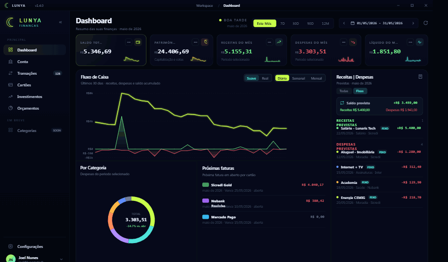

Visão geral
Dashboard
Visão geral do mês com indicadores, fluxo de caixa, faturas e lançamentos previstos para leitura rápida.
Ver apresentação completaLu System apresenta
O Lunya desktop é a versão principal para organizar contas, transações, cartões, investimentos e orçamentos com a identidade Lu System.


Funcionalidades desktop
Conheça os principais espaços da Lunya para desktop: visão geral, contas, investimentos, cartões, transações e orçamentos. Tudo pensado para acompanhar sua vida financeira no computador.
Visão geral do mês com indicadores, fluxo de caixa, faturas e lançamentos previstos para leitura rápida.
Ver apresentação completaDownloads
A versão Windows é o foco atual do produto. A versão mobile existe como protótipo e segue em desenvolvimento, então aparece aqui apenas como prévia técnica.
Versão principal para computador com dashboard financeiro, importação de extratos, cartões, transações, investimentos e orçamentos.
Baixar Desktop Baixar instalador MSIMobile em protótipo
O LunyaMB existe para testar ideias de consulta rápida pelo celular, mas a experiência ainda não está pronta para ser tratada como produto final. Por enquanto, o foco público da Lunya é o desktop para Windows.
Lunya
Finanças pessoais
Use os APKs apenas para testes, validação visual e acompanhamento do desenvolvimento mobile.
Recursos principais
Veja saldo, entradas, saídas e evolução do mês em um painel feito para leitura rápida.
Classifique despesas, acompanhe recorrências e encontre lançamentos sem perder contexto.
Crie objetivos de reserva, viagem ou quitação e acompanhe o progresso com previsibilidade.
Receba leituras objetivas sobre padrões de gasto, vencimentos e oportunidades de economia.
Controle sem planilha infinita
Lunya combina a visão consolidada do dashboard com o detalhe operacional das transações. A tela inicial mostra o cenário geral; a lista de lançamentos ajuda a explicar cada variação.
Segurança e clareza
Interface escura, contraste alto e informações priorizadas para uso recorrente.
Estrutura pensada para que o usuário entenda o que entra, sai e muda no orçamento.
Indicadores financeiros aparecem com contexto, sem excesso de notificações ou distrações.
Legal
A versão completa e atualizada dos Termos de Uso e da Política de Privacidade está publicada em uma página dedicada, aplicável ao Lunya desktop e ao LunyaMB Android, produtos da Lu System.
A política completa reúne as regras de uso, responsabilidades, dados coletados, bases legais da LGPD, armazenamento, segurança, compartilhamento com serviços como Firebase e EmailJS, retenção, exclusão de conta e direitos do titular.
Use a página dedicada como referência pública principal para Termos de Uso e Privacidade.
Abrir Termos de Uso e Privacidade